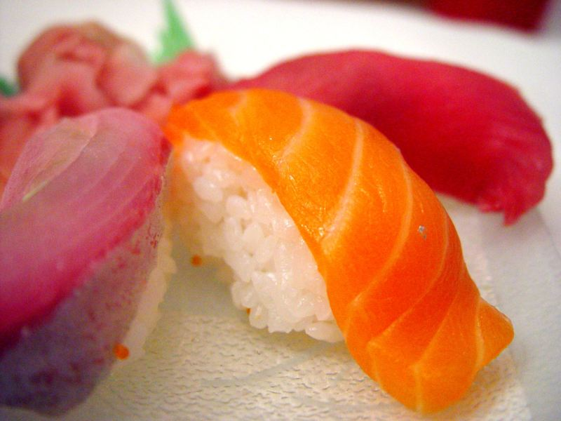

Description
Nom/Prenom: Audrey Partouche (dit nini, le poney...partouchette pour les intimes)Age: 30 ans
Lieu de naissance:
Taille: 1m57
Signe: sensible, jalouse, soucieuse , possessive, sincère, directe, honnête et fidèle
Profession: Preparatrice en pharmacie
Passions: La cuisine, faire la "fofolle", New-York et Jenifer
Elle aime: Les traditions , la musique Orientale , sa famille (+titou) et surtout les sushis!
Elle déteste: Faire l'aspirateur, quand le reveil sonne le matin :)

Interview
Quand as-tu entendu parler de lui pour la première fois?
A peu près 2 jours avant de le rencontrer. Ma copine Lolo me téléphone en me disant d'accepter une invitation Facebook. J'ai accepté sans réfléchir et me voilà... bientôt mariée :)Décris nous la rencontre
2 messages échangés, le rendez-vous était fixé. Contrairement à la réponse de Ludovic (avec la mémoire qu'on lui connait) je ne portais pas une robe rouge, mais ... un Jean!Un verre, un sushi, rentrée à minuit, bref c'était bien parti!
Des conseils à donner aux invités pour le mariage
Venez comme vous êtes mais on ne vous servira pas du mcdo.Tenue de soirée exigée,
a bientôt , on vous attend
kiss